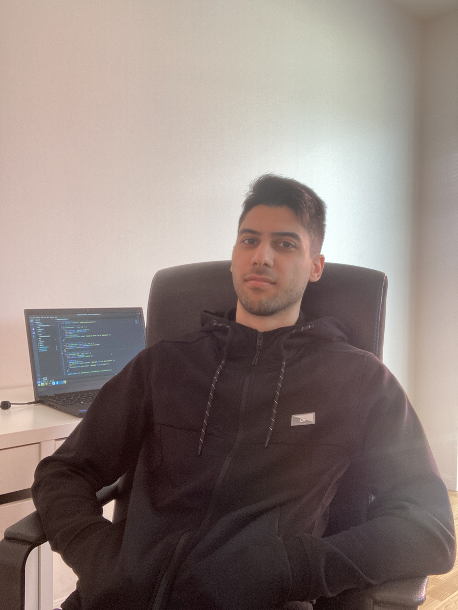
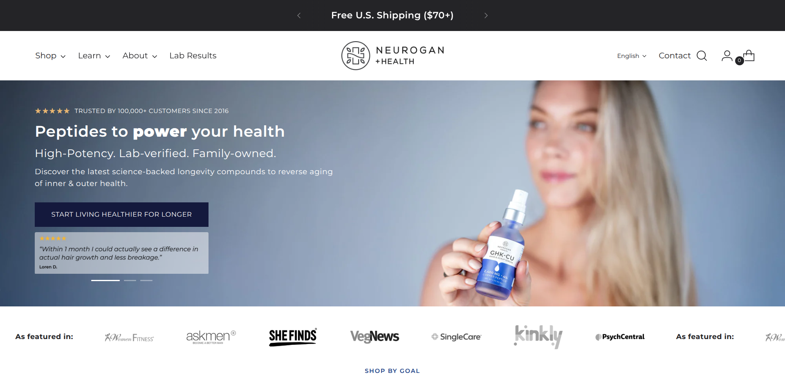
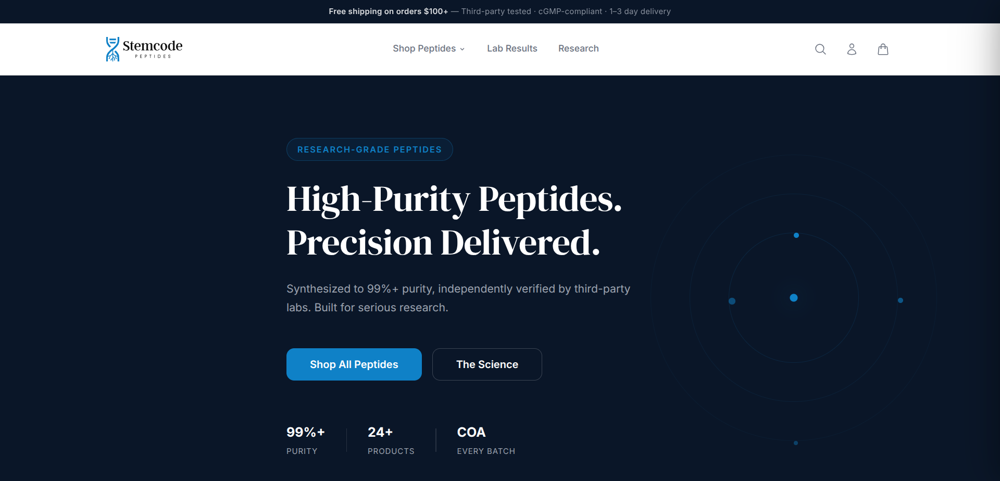
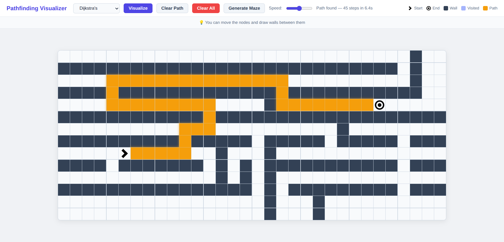
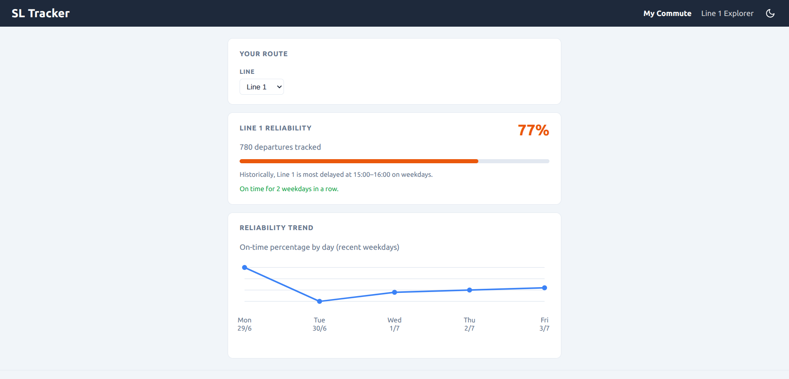

"Fadi is an exceptionally skilled developer who is a pleasure to communicate and collaborate with. He completed all tasks promptly and demonstrated a high level of expertise throughout. We highly recommend working with him!"
via Upwork · Hourly contract
"Fadi was amazing to work with and would highly recommend him to anyone. Great skills and works fast."
via Upwork · Fixed-price project

About Me
I'm a web developer based in Göteborg. Just moved here from Västerås, where I lived for 7 years.
My background spans logistics tech at Budbee, SaaS at Upsales, and e-commerce as a freelancer, giving me a broad view of how different businesses use the web to grow. I've worked as a full-time contractor, on monthly retainers, and alongside agencies on client projects.
I like to embed myself in the team, take ownership, and see things through.
I don't have a favorite stack. I've worked across different languages, frameworks, and content management systems, and I use whatever best fits the problem. Sometimes that means building from scratch. Sometimes it means reaching for an existing tool that gets the job done faster and more reliably. The same goes for my desk setup — as you can see in the photo, it's just a laptop. Whatever gets the job done.
Work History
-
June 2023 — Present
Freelance Web Developer
Self-employed
-
Jan 2023 — June 2023
Full-stack Developer
Upsales
-
Aug 2021 — Dec 2022
Frontend Developer
Budbee
- A few of the tools I've worked with
-
 JavaScript
JavaScript
-
 TypeScript
TypeScript
-
 React
React
-
 Node.js
Node.js
-
 PHP
PHP
-
 WordPress
WordPress
- Shopify
-
 PostgreSQL
PostgreSQL
-
 MySQL
MySQL
Case Studies

Neurogan Health
19 months as a full-time contractor on their online storefront. Built product pages, landing pages, UI components, and lead magnets. Integrated Klaviyo, customized cart behavior, added structured data, and optimized for technical SEO and performance — contributing to a 371% increase in sales and a 38% lift in conversion rate.
Live Site
Stemcode Peptides
Built this e-commerce site selling research-use peptides in vial, nasal spray, oral, and topical formats. The site includes catalog pages by compound and form, a "Science" section covering purity and stability research, published Certificates of Analysis for every batch, and an age/research-buyer verification step at checkout. Originally built with WordPress & WooCommerce.
Live Site
Pathfinding Visualizer
Place walls, drag start and end nodes, or generate a maze, then pick an algorithm and watch it explore the grid in real time. Supports Dijkstra's, A*, and DFS, with a live status bar showing step count and elapsed time. All animations are CSS-driven; sound effects are procedurally generated via the Web Audio API.
Best viewed on desktop. Not designed for mobile.

SL Tracker
SL Tracker monitors the reliability of Stockholm public transit lines over time. It polls the Trafiklab API on weekdays and scores each line by on-time performance. Patterns like the worst time of day to travel and day-by-day reliability trends give commuters the historical picture that live departure apps don't show.